Farmhouse kitchens have stayed popular for a reason that has nothing to do with trends: they manage to look polished and still feel like somewhere you can actually cook without worrying about ruining the aesthetic. That balance is harder to pull off than it looks.
The ones that work best aren't the most expensive or the most styled for photos, they're the ones built around real use. Open shelves that hold dishes you actually reach for. A sink deep enough for actual dishes. A table people linger at.
Here are ten ways to bring that warmth into a kitchen, whether you're planning a full renovation or just swapping a few details at a time.
They're ordered here from the broad, room-wide decisions down to the smaller swaps, so there's a sensible place to start whichever end of the project feels more realistic right now.

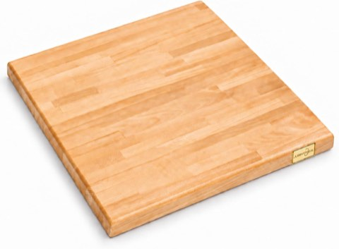
Beech Butcher Block Countertop, 24 x 25 x 1.2 Inch, Finished, Cut-to-Fit
Shop on Amazon10 Farmhouse Kitchen Ideas
1. A Neutral Base With Layered Texture
The thread that ties every farmhouse kitchen together is the palette: keep the base in whites, creams, and soft grays, then build depth through texture rather than color.
Woven baskets, linen, warm wood tones, and a little greenery all do this work quietly, a fully neutral kitchen can still feel warm rather than clinical because of exactly this layering.
A neutral base is also what keeps a farmhouse kitchen feeling timeless instead of trend-driven. The textures can shift over the years without the bones of the room ever feeling dated.
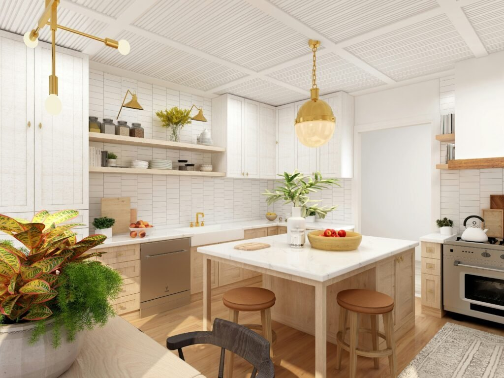
2. An Island That Actually Anchors the Room
A sturdy island does more than add counter space, it becomes the spot where everything actually happens. Homework, weekend coffee, late-night snacks, impromptu gatherings while dinner's cooking.
Worn or reclaimed wood tops bring in texture, open shelving or baskets underneath add storage without more cabinetry, and a generously sized top invites people to actually linger there.
It doesn't need to match the rest of the cabinetry, either. A contrasting island often makes the whole kitchen feel more layered and considered, not less cohesive.
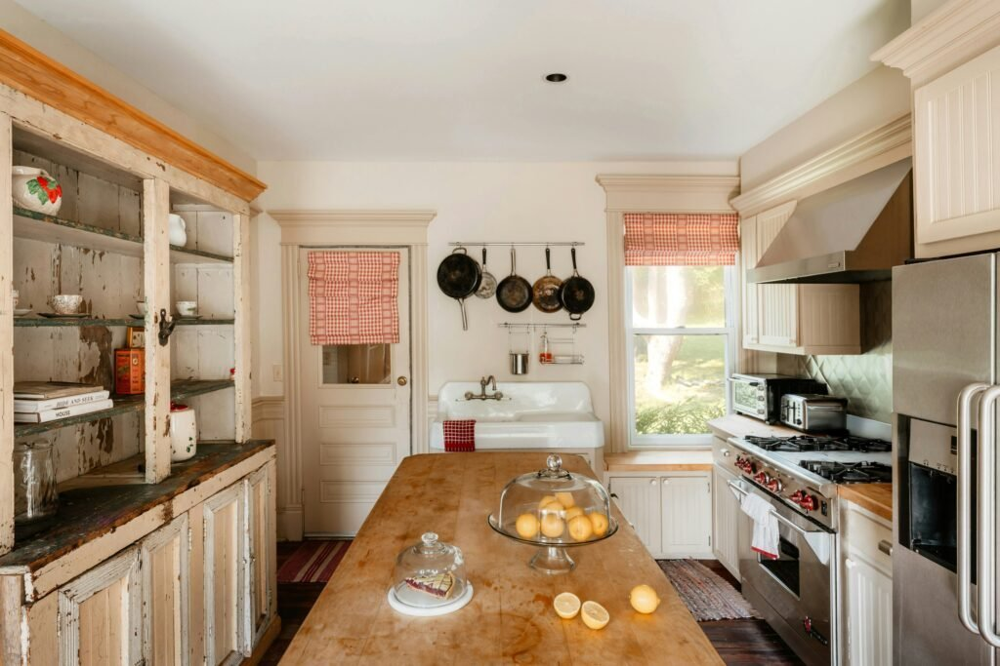
3. Vintage-Inspired Hardware and Fixtures
Sometimes the smallest details carry the most weight. Swapping plain modern pulls for something with a worn, vintage character changes the whole feel of a kitchen without touching a single cabinet box.
A genuinely aged piece, a chippy-paint hutch with original latch hardware, for instance, shows exactly what that patina looks like in real life, and it's worth chasing even in small doses elsewhere in the kitchen.
Cup pulls in oil-rubbed bronze, ceramic knobs with a distressed finish, or warm brass pulls all do the same quiet work of making a kitchen feel considered rather than builder-grade.
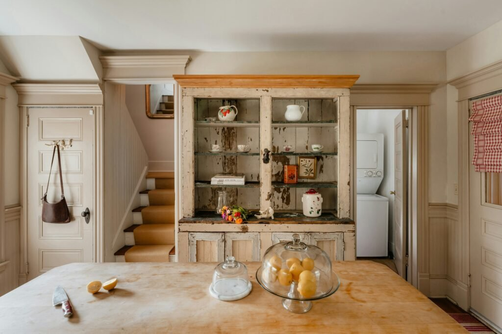
4. A Small Breakfast Nook
A breakfast nook is one of the most underrated additions a farmhouse kitchen can have, a dedicated little corner for coffee, a quick breakfast, or a spot for the kids before school.
A built-in bench with cushions is the classic version, but a simple wood table with a handful of chairs by a window does the same job in less space.
Even a small kitchen can pull this off. A two-seat bistro setup by a window captures the same cozy effect as a full built-in nook.
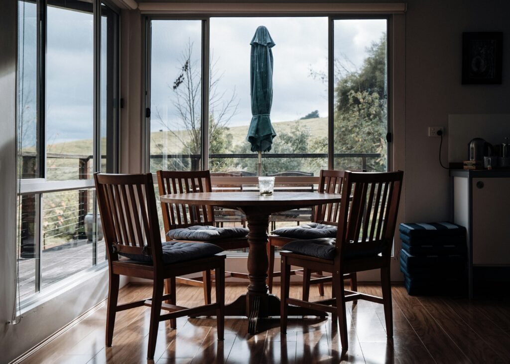
5. Butcher Block Where Stone Usually Goes
Granite and quartz get most of the attention, but butcher block brings a warmth that stone simply can't replicate, and it looks especially good against cream or white cabinetry.
It costs less than high-end stone to start, and it actually improves with age: a little patina and a few marks just add character over the years.
It does need some upkeep, an occasional oiling, quick wipe-ups, but most people who have it will say the trade-off is worth it for how much warmth it adds to the room.
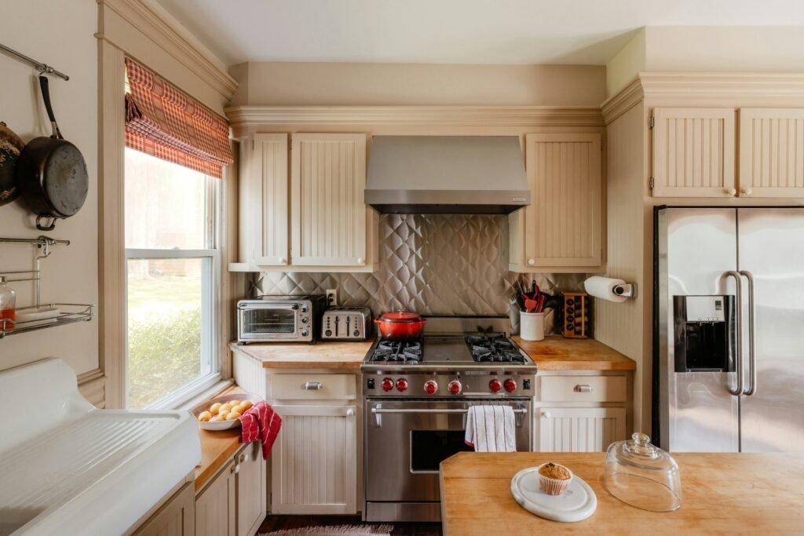
6. A Statement Light Fixture
Lighting is the most underrated farmhouse kitchen upgrade there is. Swap a builder-grade flush mount for something with real presence, and the whole room's personality shifts.
A wagon-wheel style fixture with exposed Edison bulbs brings genuine rustic character. A vintage-inspired chandelier or an oversized iron pendant over an island does similar work in a more everyday kitchen setting.
Think of the fixture as functional jewelry for the room, it should be noticeable, not apologetic about it.
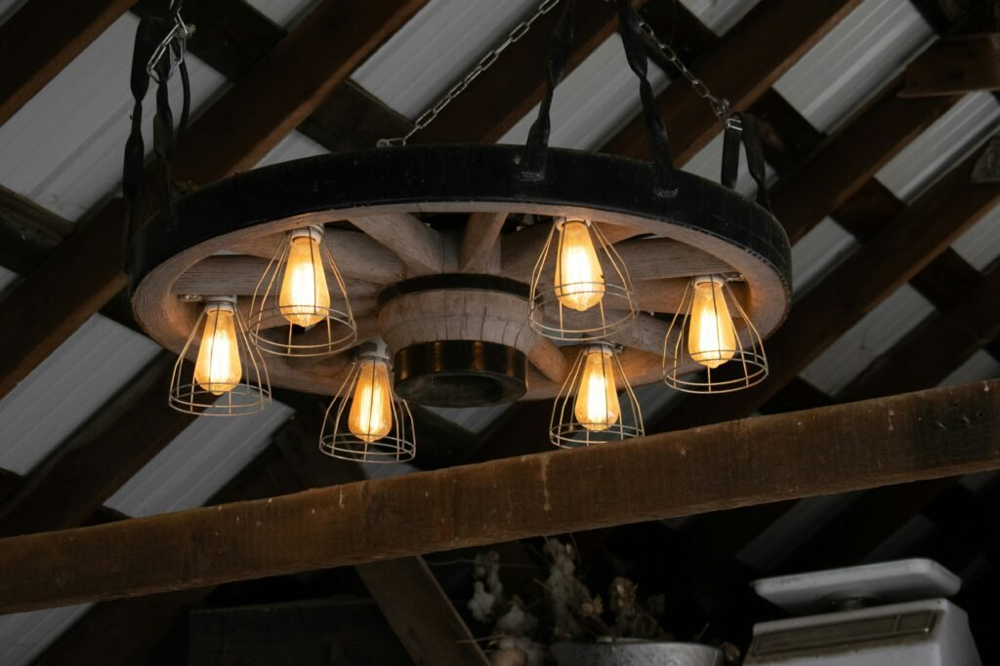
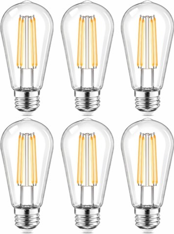
Shatterproof Edison LED Light Bulbs, 6 Pack, 60 Watt Equivalent, Warm White
Shop on Amazon7. Shiplap or Vertical Paneling on One Wall
Shiplap has earned its reputation as a farmhouse staple because it genuinely works with almost anything, paint it crisp white for a classic look, or leave a colored version, like a blue paneling, for something a little more unexpected.
It adds texture and a sense of craftsmanship to a wall that would otherwise be flat drywall, without competing for attention the way a bold wallpaper might.
One accent wall, often right behind the sink or range, is usually enough. The whole room doesn't need covering to get the effect.
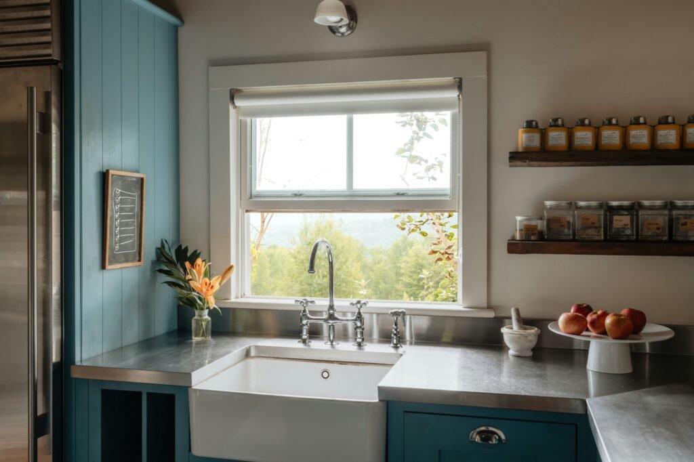
8. Reclaimed and Weathered Wood
Reclaimed wood brings a level of authenticity that nothing new can really fake, every knot, hinge mark, and worn edge is doing real work.
A vintage hutch or cabinet with original wrought-iron hinges carries decades of use in a way that instantly grounds a kitchen. Even swapping in one weathered piece against newer surfaces creates that layered, collected feeling.
A full room of it was never necessary. One genuinely old piece next to everything else does more than a dozen new items trying to look old.
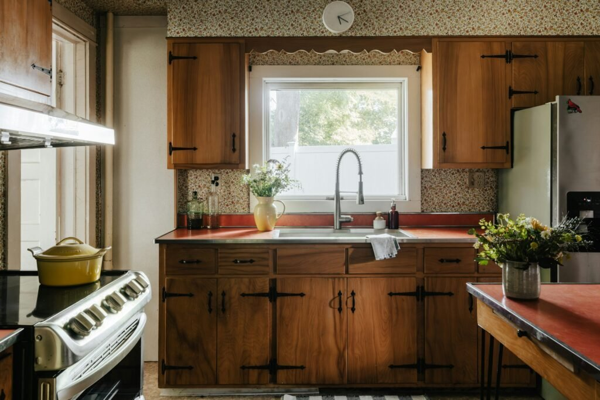
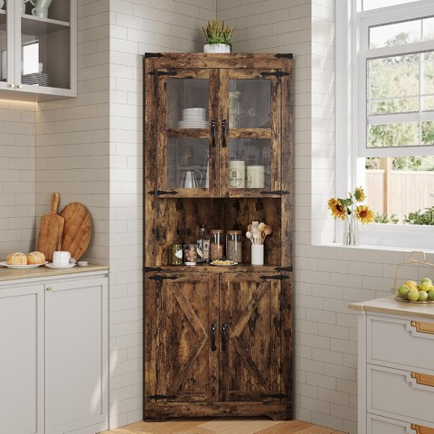
GarveeHome 67 Inch Tall Farmhouse Corner Hutch Storage Cabinet with Glass Doors
Shop on Amazon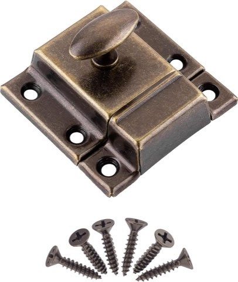
Large Stamped Antique Brass Spring Loaded Cabinet Door Latch, 2 1/8 Inch
Shop on Amazon9. A Real Apron-Front Sink
If one single feature says "farmhouse kitchen" louder than anything else, it's the apron-front sink. It's not just a pretty shape, that deep, wide basin genuinely handles a stack of dishes better than a standard sink ever will.
It's durable, it's timeless, and it instantly becomes the visual anchor of the whole room.
Pairing it with a bridge-style or gooseneck faucet in brass or matte black lets the sink alone start doing a lot of the room's styling work.
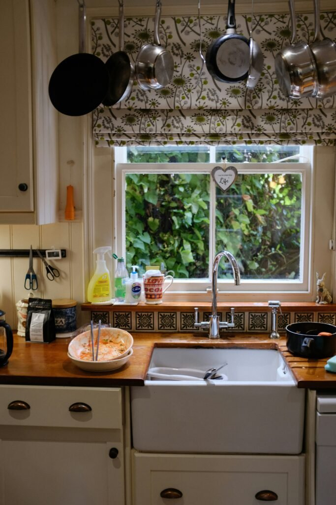
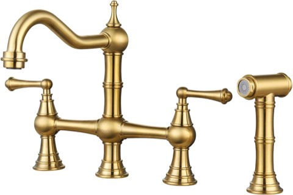
WOWOW Brass Bridge Kitchen Faucet, 4 Hole, with Side Sprayer, Brushed Gold
Shop on Amazon10. Open Shelving Instead of Upper Cabinets
Open shelving sounds risky, suddenly mismatched mugs are on display for everyone to see, but it's one of the fastest ways to make a farmhouse kitchen feel lighter and less boxed-in.
Closed cabinets stack up visual weight fast. A pair of open shelves does the opposite: it gives everyday plates, bowls, and glassware somewhere to live while keeping the wall feeling open.
Committing to a full wall of open shelving all at once isn't required. Start small. Swap one upper cabinet for two shelves and see how it feels before going further.


Final Thoughts
Ten ideas, and all of them were never actually required to get the look. From open shelving and shiplap to vintage hardware and a proper breakfast nook, each one adds its own bit of warmth without requiring a full renovation.
The appeal of farmhouse style has always been that balance, stylish without being precious, rustic without feeling unfinished. Swapping hardware, adding a butcher block counter, or styling one open shelf can shift the whole feel of a kitchen on its own.
Start with whichever idea keeps getting revisited. The rest of the kitchen tends to follow.
A kitchen built this way one decision at a time ends up looking more collected than one finished in a single weekend ever could.